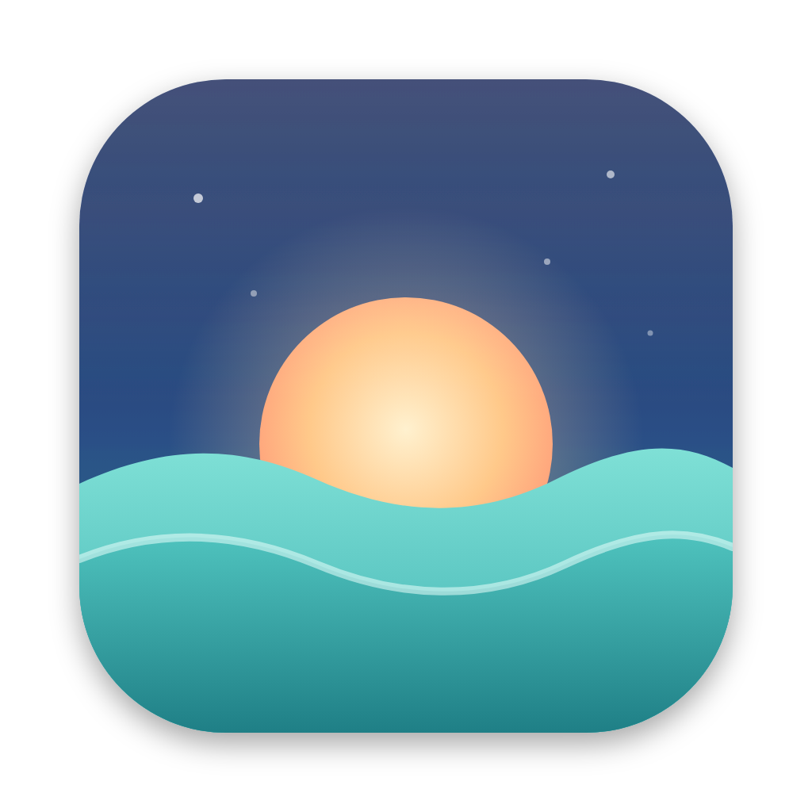

Ebb · Work in flow, rest in ebb.The macOS menu-bar app that makes you take screen breaks, lets you ask for more time when it matters, and never interrupts a meeting.
A countdown sits quietly in your menu bar. Ebb only counts minutes when you're actually using your Mac.
No sudden cut-offs. A notification gives you time to finish your sentence, save your file and close the thought.
A calm, blurred break screen covers every display, even full-screen apps, so you actually step away.
Deep in a deadline or about to join a call? Push the break back. A small daily budget stops it from becoming a habit.
If a break comes due during a call, Ebb waits. It starts the break 90 seconds after you hang up.
Normal mode has an emergency exit. Strict mode removes it, for when you know you'll cheat.
Every day is logged: screen time, meetings, breaks taken or skipped, and every exception with its reason.